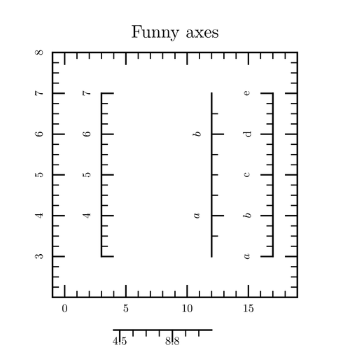
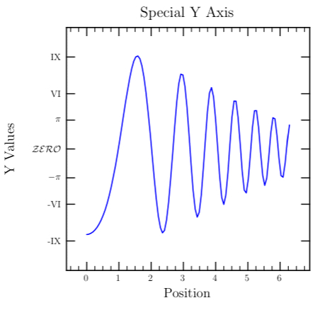

class Tioga::X_and_Y_Axes
These are the methods and attributes for the plot axes.
See Tutorial::Plots for more information.
Public Instance Methods
Takes the same argument as show_axis, and returns some information about the way the corresponding axis would be organized, in the form of a hash with the following keys:
-
'major': the position of major ticks
-
'labels': their corresponding numeric labels (as given to LaTeX, so that includes things like tiogayaxisnumericlabel)
-
'vertical': whether the axis is vertical or horizontal
-
'scale', 'shift', 'angle' : the shift, scale and angle of
the tick labels
-
'line_width': the axis line width
-
'x0', 'y0', 'x1', 'y1': the axis position in figure coordinates
-
'major_tick_width', 'major_tick_length', 'minor_tick_length', 'minor_tick_width': ticks widths and lengths
# File lib/Tioga/X_and_Y_Axes.rb, line 37 def axis_information(loc) end
Determines the axis type to use when showing the bottom edge of a plot.
Valid types are the following predefined constants:
AXIS_HIDDEN, AXIS_LINE_ONLY,
AXIS_WITH_MAJOR_TICKS_ONLY, AXIS_WITH_TICKS_ONLY,
AXIS_WITH_MAJOR_TICKS_AND_NUMERIC_LABELS, and
AXIS_WITH_TICKS_AND_NUMERIC_LABELS.
# File lib/Tioga/X_and_Y_Axes.rb, line 130 def bottom_edge_type end
If true, then it is okay for tioga to show the bottom edge of
a plot. If false, then calls on #show_bottom_edge
return immediately. This attribute is “one-way-only” in that it starts
true and can be set false, but cannot be reset to
true except by restoring the graphics state in which is was
still true. This is intended to help control the behavior of
plots when embedded as subplots in a larger configuration. Note that this
does not effect showing the x axis on the bottom; it only applies to calls
on show_bottom_edge.
# File lib/Tioga/X_and_Y_Axes.rb, line 146 def bottom_edge_visible end
Determines the axis type to use when showing the left edge of a plot.
Valid types are the following predefined constants:
AXIS_HIDDEN, AXIS_LINE_ONLY,
AXIS_WITH_MAJOR_TICKS_ONLY, AXIS_WITH_TICKS_ONLY,
AXIS_WITH_MAJOR_TICKS_AND_NUMERIC_LABELS, and
AXIS_WITH_TICKS_AND_NUMERIC_LABELS.
# File lib/Tioga/X_and_Y_Axes.rb, line 158 def left_edge_type end
If true, then it is okay for tioga to show the left edge of a
plot. If false, then calls on #show_left_edge return
immediately. This attribute is “one-way-only” in that it starts
true and can be set false, but cannot be reset to
true except by restoring the graphics state in which is was
still true. This is intended to help control the behavior of
plots when embedded as subplots in a larger configuration. Note that this
does not effect showing the y axis on the left; it only applies to calls on
show_left_edge.
# File lib/Tioga/X_and_Y_Axes.rb, line 174 def left_edge_visible end
Determines the axis type to use when showing the right edge of a plot.
Valid types are the following predefined constants:
AXIS_HIDDEN, AXIS_LINE_ONLY,
AXIS_WITH_MAJOR_TICKS_ONLY, AXIS_WITH_TICKS_ONLY,
AXIS_WITH_MAJOR_TICKS_AND_NUMERIC_LABELS, and
AXIS_WITH_TICKS_AND_NUMERIC_LABELS.
# File lib/Tioga/X_and_Y_Axes.rb, line 185 def right_edge_type end
If true, then it is okay for tioga to show the right edge of a
plot. If false, then calls on #show_right_edge
return immediately. This attribute is “one-way-only” in that it starts
true and can be set false, but cannot be reset to
true except by restoring the graphics state in which is was
still true. This is intended to help control the behavior of
plots when embedded as subplots in a larger configuration. Note that this
does not effect showing the y axis on the right; it only applies to calls
on show_right_edge.
# File lib/Tioga/X_and_Y_Axes.rb, line 200 def right_edge_visible end
Show one of the plot axes. If loc is LEFT,
RIGHT, or AT_X_ORIGIN, and #yaxis_visible is
true, then the axis is shown using the current y axis
settings. If loc is TOP, BOTTOM, or
AT_Y_ORIGIN, and #xaxis_visible is
true, then the axis is shown using the current x axis
settings.
Sarting from Tioga 1.8, you can specify a dictionary instead of the position. This dictionary must either have a 'location' or a 'from' and 'to' entry to specify the position of the axis. See axis_information for more dictionary entries understood.
NOTE: using a dictionnary bypasses the checks xaxis_visible and yaxis_visible !
[from samples/plots/plots.rb] # This plot is to demonstrate the new power of #show_axis. def axes_fun t.do_box_labels("Funny axes", "", "") t.show_plot([-1, 19, 8, 2]) do spec = { 'from' => [3,3], 'to' => [3,7], 'ticks_outside' => true, 'ticks_inside' => false, } t.show_axis(spec) spec2 = { 'from' => [12,3], 'to' => [12,7], 'ticks_outside' => true, 'ticks_inside' => false, 'major_ticks' => [4,6], 'labels' => ["$a$", "$b$"] } t.show_axis(spec2) spec3 = { 'from' => [17,3], 'to' => [17,7], 'ticks_outside' => true, 'ticks_inside' => false, 'labels' => ["$a$", "$b$", 'c', 'd', 'e'] } t.show_axis(spec3) end t.context do t.set_bounds([-1, 19, 8, 2]) spec = { 'from' => [4,1.2], 'to' => [12,1.2], 'major_ticks' => [ 4.5, 8.8] } t.show_axis(spec) end end

# File lib/Tioga/X_and_Y_Axes.rb, line 261 def show_axis(loc) end
If the flag #bottom_edge_visible
is true and the #xaxis_loc is not
BOTTOM, then shows the bottom edge of the frame. Otherwise,
simply returns.
# File lib/Tioga/X_and_Y_Axes.rb, line 61 def show_bottom_edge end
Show one of the plot edges. The loc argument must be one of
LEFT, RIGHT, TOP, or
BOTTOM. Left and right edges are shown using the current y
axis settings. Top and bottom edges are shown using the x axis settings.
If the corresponding edge_visible attribute has been set false, this
command simply returns without doing anything.
# File lib/Tioga/X_and_Y_Axes.rb, line 268 def show_edge(loc) end
If the flag #left_edge_visible
is true and the #yaxis_loc is not
LEFT, then shows the left edge of the frame. Otherwise,
simply returns.
# File lib/Tioga/X_and_Y_Axes.rb, line 69 def show_left_edge end
If the flag #right_edge_visible
is true and the #yaxis_loc is not
RIGHT, then shows the right edge of the frame. Otherwise,
simply returns.
# File lib/Tioga/X_and_Y_Axes.rb, line 77 def show_right_edge end
If the flag #top_edge_visible is
true and the #xaxis_loc is not
TOP, then shows the top edge of the frame. Otherwise, simply
returns.
# File lib/Tioga/X_and_Y_Axes.rb, line 53 def show_top_edge end
If the flag #xaxis_visible is
currently true, then this routine shows the x axis at the
location specified by xaxis_loc. If the flag is false, it
simply returns.
# File lib/Tioga/X_and_Y_Axes.rb, line 20 def show_xaxis end
If the flag #yaxis_visible is
currently true, then this routine shows the y axis at the
location specified by yaxis_loc. If the flag is false, it
simply returns.
# File lib/Tioga/X_and_Y_Axes.rb, line 45 def show_yaxis end
Determines the axis type to use when showing the top edge of a plot. Valid
types are the following predefined constants: AXIS_HIDDEN,
AXIS_LINE_ONLY, AXIS_WITH_MAJOR_TICKS_ONLY,
AXIS_WITH_TICKS_ONLY,
AXIS_WITH_MAJOR_TICKS_AND_NUMERIC_LABELS, and
AXIS_WITH_TICKS_AND_NUMERIC_LABELS.
# File lib/Tioga/X_and_Y_Axes.rb, line 103 def top_edge_type end
If true, then it is okay for tioga to show the top edge of a
plot. If false, then calls on #show_top_edge return
immediately. This attribute is “one-way-only” in that it starts
true and can be set false, but cannot be reset to
true except by restoring the graphics state in which is was
still true. This is intended to help control the behavior of
plots when embedded as subplots in a larger configuration. Note that this
does not effect showing the x axis on the top; it only applies to calls on
show_top_edge.
# File lib/Tioga/X_and_Y_Axes.rb, line 119 def top_edge_visible end
If non-zero (and #xaxis_use_fixed_pt is not true), then x axis numeric labels will be switched to exponential format if they require more than this number of digits. If #yaxis_digits_max is set to zero, then a system-choosen default value is used instead. See also xaxis_use_fixed_pt.
# File lib/Tioga/X_and_Y_Axes.rb, line 346 def xaxis_digits_max end
Value for the line_width attribute when painting the x axis line.
# File lib/Tioga/X_and_Y_Axes.rb, line 467 def xaxis_line_width end
Determines the location of the x axis. Valid locations are given as the
following predefined constants: BOTTOM, TOP, and
AT_Y_ORIGIN.
# File lib/Tioga/X_and_Y_Axes.rb, line 292 def xaxis_loc end
If nil, then tioga will pick locations for major ticks on the
x axis. Otherwise, this should be Dvector of locations in x figure
coordinates in strictly increasing order.
# File lib/Tioga/X_and_Y_Axes.rb, line 398 def xaxis_locations_for_major_ticks end
If nil, then tioga will pick locations for minor ticks on the
x axis. Otherwise, this should be Dvector of locations in x figure
coordinates in strictly increasing order.
# File lib/Tioga/X_and_Y_Axes.rb, line 407 def xaxis_locations_for_minor_ticks end
If true, then locations along the x axis are to be treated as
log values (base 10). This changes both the default placing of tick marks
and the appearance of numeric labels.
# File lib/Tioga/X_and_Y_Axes.rb, line 425 def xaxis_log_values end
Length of major ticks on the x axis measured in units of the default text height.
# File lib/Tioga/X_and_Y_Axes.rb, line 451 def xaxis_major_tick_length end
Value for the line_width attribute when painting the x axis major tick marks.
# File lib/Tioga/X_and_Y_Axes.rb, line 475 def xaxis_major_tick_width end
When tioga picks the interval between major tick marks on the x axis, it will ensure that the interval is at least this large. Note that this distance is given in units of the default text height rather than in x coordinates.
# File lib/Tioga/X_and_Y_Axes.rb, line 377 def xaxis_min_between_major_ticks end
Length of minor ticks on the x axis measured in units of the default text height.
# File lib/Tioga/X_and_Y_Axes.rb, line 459 def xaxis_minor_tick_length end
Value for the line_width attribute when painting the x axis minor tick marks.
# File lib/Tioga/X_and_Y_Axes.rb, line 483 def xaxis_minor_tick_width end
Determines the number of minor intervals making up the distance between major ticks marks on the x axis. If this is set to 0, then tioga will pick the number.
# File lib/Tioga/X_and_Y_Axes.rb, line 367 def xaxis_number_of_minor_intervals end
The alignment setting for numeric labels on the x axis. See also tex_xaxis_numeric_label.
# File lib/Tioga/X_and_Y_Axes.rb, line 529 def xaxis_numeric_label_alignment end
Numeric labels on the x axis are rotated by this angle from vertical. See also tex_xaxis_numeric_label.
# File lib/Tioga/X_and_Y_Axes.rb, line 520 def xaxis_numeric_label_angle end
If non-negative, then use this number of digits after the decimal when creating numeric labels for the x axis. See also tex_xaxis_numeric_label.
# File lib/Tioga/X_and_Y_Axes.rb, line 335 def xaxis_numeric_label_decimal_digits end
The frequency setting for numeric labels on the x axis. Major ticks are numbered from 0 at the small x end of the axis. Tick number k gets a label only if mod(i+j,k)==0 where j=xaxis_numeric_label_phase and k=xaxis_numeric_label_frequency. The default for #xaxis_numeric_label_frequency is 1 so that every major tick gets a label. See also xaxis_numeric_label_phase.
# File lib/Tioga/X_and_Y_Axes.rb, line 555 def xaxis_numeric_label_frequency end
The justification setting for numeric labels on the x axis. See also tex_xaxis_numeric_label.
# File lib/Tioga/X_and_Y_Axes.rb, line 538 def xaxis_numeric_label_justification end
The phase setting for numeric labels on the x axis. The default phase is 0. See #xaxis_numeric_label_frequency for details.
# File lib/Tioga/X_and_Y_Axes.rb, line 565 def xaxis_numeric_label_phase end
Scaling factor relative to default_text_scale for the numeric labels on the x axis in plots. See also tex_xaxis_numeric_label.
# File lib/Tioga/X_and_Y_Axes.rb, line 500 def xaxis_numeric_label_scale end
Distance to shift the reference point for showing numeric labels on the x axis measured in character heights with positive directed out away from the plot for x axis on top or bottom, or toward positive y values for x axis at y origin. See also tex_xaxis_numeric_label.
# File lib/Tioga/X_and_Y_Axes.rb, line 511 def xaxis_numeric_label_shift end
The string for a numeric label is put in this TeX command string to be formatted. For example, `$#1$' will give the numbers in math mode, while `$mathsf{#1}$' will show the label using the math sans-serif font.
# File lib/Tioga/X_and_Y_Axes.rb, line 313 def xaxis_numeric_label_tex end
Flag is true if the bounds_left is not the bounds_xmin.
# File lib/Tioga/X_and_Y_Axes.rb, line 84 def xaxis_reversed end
Value for the stroke_color attribute when painting the x axis.
# File lib/Tioga/X_and_Y_Axes.rb, line 491 def xaxis_stroke_color end
If 0, then tioga will pick the interval between major tick marks on the x axis. Otherwise, this will be used as the interval in x coordinates for the spacing between major ticks.
# File lib/Tioga/X_and_Y_Axes.rb, line 872 def xaxis_tick_interval end
If nil, then tioga will create numeric labels for the major
ticks on the x axis. Otherwise, you must also specify #xaxis_locations_for_major_ticks,
and #xaxis_tick_labels
must be an equal length array of strings giving the corresponding labels.
See also yaxis_tick_labels.
# File lib/Tioga/X_and_Y_Axes.rb, line 389 def xaxis_tick_labels end
If true, then ticks will be added along the x axis inside the
plot frame. If false, then no ticks will appear inside the
frame along the x axis.
# File lib/Tioga/X_and_Y_Axes.rb, line 434 def xaxis_ticks_inside end
If true, then ticks will be added along the x axis outside the
plot frame. If false, then no ticks will appear outside the
frame along the x axis.
# File lib/Tioga/X_and_Y_Axes.rb, line 443 def xaxis_ticks_outside end
Determines the axis type to use when showing the x axis of a plot. Valid
types are the following predefined constants: AXIS_HIDDEN,
AXIS_LINE_ONLY, AXIS_WITH_MAJOR_TICKS_ONLY,
AXIS_WITH_TICKS_ONLY,
AXIS_WITH_MAJOR_TICKS_AND_NUMERIC_LABELS, and
AXIS_WITH_TICKS_AND_NUMERIC_LABELS.
# File lib/Tioga/X_and_Y_Axes.rb, line 303 def xaxis_type end
If this flag is true, then numeric labels for the x axis will
always use fixed point notation rather than exponential. If
false, then the value of #xaxis_digits_max
will be used to decide between fixed point or exponential notation. See
also xaxis_digits_max.
# File lib/Tioga/X_and_Y_Axes.rb, line 358 def xaxis_use_fixed_pt end
If true, then it is okay for tioga to show the x axis of a
plot. If false, then calls on #show_axis for the x axis
return immediately. This attribute is “one-way-only” in that it starts
true and can be set false, but cannot be reset to
true except by restoring the graphics state in which is was
still true. This is intended to help control the behavior of
plots when embedded as subplots in a larger configuration. Note that this
does not effect showing the top or bottom edges; it only applies to calls
on show_axis.
# File lib/Tioga/X_and_Y_Axes.rb, line 283 def xaxis_visible end
If non-zero (and #yaxis_use_fixed_pt is not true), then y axis numeric labels will be switched to exponential format if they require more than this number of digits. If #yaxis_digits_max is set to zero, then a system-choosen default value is used instead. See also yaxis_use_fixed_pt.
# File lib/Tioga/X_and_Y_Axes.rb, line 651 def yaxis_digits_max end
Value for the line_width attribute when painting the y axis line.
# File lib/Tioga/X_and_Y_Axes.rb, line 792 def yaxis_line_width end
Determines the location of the y axis. Valid locations are given as the
following predefined constants: LEFT, RIGHT, and
AT_X_ORIGIN.
# File lib/Tioga/X_and_Y_Axes.rb, line 619 def yaxis_loc end
If nil, then tioga will pick locations for major ticks on the
y axis. Otherwise, this should be Dvector of locations in y figure
coordinates in strictly increasing order.
See also yaxis_tick_labels.
# File lib/Tioga/X_and_Y_Axes.rb, line 732 def yaxis_locations_for_major_ticks end
If nil, then tioga will pick locations for minor ticks on the
y axis. Otherwise, this should be Dvector of locations in x figure
coordinates in strictly increasing order.
# File lib/Tioga/X_and_Y_Axes.rb, line 741 def yaxis_locations_for_minor_ticks end
If true, then locations along the y axis are to be treated as
log values (base 10). This changes both the default placing of tick marks
and the appearance of numeric labels.
# File lib/Tioga/X_and_Y_Axes.rb, line 750 def yaxis_log_values end
Length of major ticks on the y axis measured in units of the default text height.
# File lib/Tioga/X_and_Y_Axes.rb, line 776 def yaxis_major_tick_length end
Value for the line_width attribute when painting the y axis major tick marks.
# File lib/Tioga/X_and_Y_Axes.rb, line 800 def yaxis_major_tick_width end
When tioga picks the interval between major tick marks on the y axis, it will ensure that the interval is at least this large. Note that this distance is given in units of the default text height rather than in y coordinates.
# File lib/Tioga/X_and_Y_Axes.rb, line 681 def yaxis_min_between_major_ticks end
Length of minor ticks on the y axis measured in units of the default text height.
# File lib/Tioga/X_and_Y_Axes.rb, line 784 def yaxis_minor_tick_length end
Value for the line_width attribute when painting the y axis minor tick marks.
# File lib/Tioga/X_and_Y_Axes.rb, line 808 def yaxis_minor_tick_width end
Determines the number of minor intervals making up the distance between major ticks marks on the y axis. If this is set to 0, then tioga will pick the number.
# File lib/Tioga/X_and_Y_Axes.rb, line 672 def yaxis_number_of_minor_intervals end
The alignment setting for numeric labels on the y axis. See also tex_yaxis_numeric_label.
# File lib/Tioga/X_and_Y_Axes.rb, line 854 def yaxis_numeric_label_alignment end
Numeric labels on the y axis are rotated by this angle from horizontal. See also tex_yaxis_numeric_label.
# File lib/Tioga/X_and_Y_Axes.rb, line 845 def yaxis_numeric_label_angle end
If non-negative, then use this number of digits after the decimal when creating numeric labels for the y axis. See also tex_yaxis_numeric_label.
# File lib/Tioga/X_and_Y_Axes.rb, line 640 def yaxis_numeric_label_decimal_digits end
The frequency setting for numeric labels on the y axis. Major ticks are numbered from 0 at the small y end of the axis. Tick number k gets a label only if mod(i+j,k)==0 where j=yaxis_numeric_label_phase and k=yaxis_numeric_label_frequency. The default for #yaxis_numeric_label_frequency is 1 so that every major tick gets a label. See also yaxis_numeric_label_phase.
# File lib/Tioga/X_and_Y_Axes.rb, line 582 def yaxis_numeric_label_frequency end
The justification setting for numeric labels on the y axis.
# File lib/Tioga/X_and_Y_Axes.rb, line 863 def yaxis_numeric_label_justification end
The phase setting for numeric labels on the y axis. The default phase is 0. See #yaxis_numeric_label_frequency for details.
# File lib/Tioga/X_and_Y_Axes.rb, line 592 def yaxis_numeric_label_phase end
Scaling factor relative to default_text_scale for the numeric labels on the y axis in plots. See also tex_yaxis_numeric_label.
# File lib/Tioga/X_and_Y_Axes.rb, line 825 def yaxis_numeric_label_scale end
Distance to shift the reference point for showing numeric labels on the y axis measured in character heights with positive directed out away from the plot for y axis on left or right, or toward positive x values for y axis at x origin. See also tex_yaxis_numeric_label.
# File lib/Tioga/X_and_Y_Axes.rb, line 836 def yaxis_numeric_label_shift end
The string for a numeric label is put in this TeX command string to be formatted. For example, `$#1$' will give the numbers in math mode, while `$mathsf{#1}$' will show the label using the math sans-serif font.
# File lib/Tioga/X_and_Y_Axes.rb, line 323 def yaxis_numeric_label_tex end
Flag is true if the bounds_bottom is not the bounds_ymin.
# File lib/Tioga/X_and_Y_Axes.rb, line 91 def yaxis_reversed end
Value for the stroke_color attribute when painting the y axis.
# File lib/Tioga/X_and_Y_Axes.rb, line 816 def yaxis_stroke_color end
If 0, then tioga will pick the interval between major tick marks on the y axis. Otherwise, this will be used as the interval in y coordinates for the spacing between major ticks.
# File lib/Tioga/X_and_Y_Axes.rb, line 416 def yaxis_tick_interval end
If nil, then tioga will create numeric labels for the major
ticks on the y axis. Otherwise, you must also specify #yaxis_locations_for_major_ticks,
and #yaxis_tick_labels
must be an equal length array of strings giving the corresponding labels.
See also xaxis_tick_labels.
Examples
def special_y t.ylabel_shift += 2 t.do_box_labels('Special Y Axis', 'Position', 'Y Values') t.yaxis_numeric_label_angle = -90 t.yaxis_locations_for_major_ticks = [ -10.0, -6.0, -PI, 0.0, PI, 6.0, 10.0 ] t.yaxis_tick_labels = [ "-IX", "-VI", "$-\\pi$", "$\\mathcal{ZERO}$", "$\\pi$", "VI", "IX" ] t.yaxis_type = AXIS_WITH_MAJOR_TICKS_AND_NUMERIC_LABELS t.stroke_color = Blue t.yaxis_numeric_label_justification = RIGHT_JUSTIFIED t.right_edge_type = AXIS_WITH_MAJOR_TICKS_ONLY t.yaxis_numeric_label_shift = 0 xs = @positions; ys = @big_blues t.show_plot('boundaries' => plot_boundaries(xs,ys,@margin,-11, 11)) do t.append_points_to_path(xs,ys) t.stroke end end

# File lib/Tioga/X_and_Y_Axes.rb, line 720 def yaxis_tick_labels end
If true, then ticks will be added along the y axis inside the
plot frame. If false, then no ticks will appear inside the
frame along the y axis.
# File lib/Tioga/X_and_Y_Axes.rb, line 759 def yaxis_ticks_inside end
If true, then ticks will be added along the y axis outside the
plot frame. If false, then no ticks will appear outside the
frame along the y axis.
# File lib/Tioga/X_and_Y_Axes.rb, line 768 def yaxis_ticks_outside end
Determines the axis type to use when showing the y axis of a plot. Valid
types are the following predefined constants: AXIS_HIDDEN,
AXIS_LINE_ONLY, AXIS_WITH_MAJOR_TICKS_ONLY,
AXIS_WITH_TICKS_ONLY,
AXIS_WITH_MAJOR_TICKS_AND_NUMERIC_LABELS, and
AXIS_WITH_TICKS_AND_NUMERIC_LABELS.
# File lib/Tioga/X_and_Y_Axes.rb, line 630 def yaxis_type end
If this flag is true, then numeric labels for the y axis will
always use fixed point notation rather than exponential. If
false, then the value of #yaxis_digits_max
will be used to decide between fixed point or exponential notation. See
also yaxis_digits_max.
# File lib/Tioga/X_and_Y_Axes.rb, line 663 def yaxis_use_fixed_pt end
If true, then it is okay for tioga to show the y axis of a
plot. If false, then calls on #show_axis for the y axis
return immediately. This attribute is “one-way-only” in that it starts
true and can be set false, but cannot be reset to
true except by restoring the graphics state in which is was
still true. This is intended to help control the behavior of
plots when embedded as subplots in a larger configuration. Note that this
does not effect showing the left or right edges; it only applies to calls
on show_axis.
# File lib/Tioga/X_and_Y_Axes.rb, line 610 def yaxis_visible end